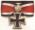

De: La Frikipedia, la enciclopedia extremadamente seria.
De: La Frikipedia, la enciclopedia extremadamente seria. De: La Frikipedia, la enciclopedia extremadamente seria.
| De la serie conflictos armados: | ||||
| Guerras Clon | ||||
| ||||
| Lugar y fecha | hace tropecientos millones de años en una galaxia muy lejana | |||
|---|---|---|---|---|
| Bandos | ejército de clones buenos | ejércitos de clones malos | ||
| Fuerzas | oscura | más oscura todavía | ||
| Comandantes | Senador papa-tine | obi juan kenobi | ||
| Armas | la bombilla fluorescente del techo | puntero láser | ||
| Bajas | todos muertos | ganaron pero se suicidaron en masa | ||
| Resultado | ganaron los clones | |||
Esta es una de las guerras más extrañas por todos conocida , ya que todo el mundo se parecía a todo el mundo, pero calcaitos oiga...incluso los enemigos estaban clonados de sus enemigos , tal fue la confusión que al final no se sabe quien ganó la guerra. Tras árduas investigaciones científicas , se descarta el que una única madre haya sido la originaria de tanto tío exactamente igual. Más que nada porque el número de polvetes habría sido astronómico (y hablamos sólo de los soldados en activo , los que están en reserva ni hablemos), con el consiguiente número de infarto de partos. Vamos , que ni anestesia epidural ni nada que se le parezca , anestesia general al canto , pero por goteo intravenoso. Y a hechar polvetes por la patria oiga , lo que haga falta...
Otra vertiente científica algo más creible , pero tampoco mucho más no se vayan ustedes a creer , es que todos tenian la misma máscara , el mismo traje de combate, y la misma mala hostia a la hora de disparar , pero que eran personas individuales. Como no se conocen casos de personas colectivas , no se ha discutido este punto. Se baraja también una nueva hipotesis: los de la república estaban del lado de los inspectores de Hacienda y los clones habían decidido no pagar ni un céntimo al fisco , lo cual explicaría el numero. Respecto al parecido físico, de nuevo aparece la teoría de la máscara. Se ha sugerido que Jim Carrey tenía algo que ver con el asunto, pero se ve poco probable.
Se dice que Hitler tenía varios clones que casualmente eran calcados a él. Tuvo 6 clones con los que vivió en el bosque. Allí conocieron a Blancanieves. A veces se subían uno encima de otro vestidos con una gabardina para parecer una persona alta
Preparación:Calentar el aceite y rehogar la Célula madre con el ajo picado a fuego suave. Cuando el embríon a perdido el nervio , (entre 5/10 minutos , según temperatura del aceite), es decir esta blanda pero justo cuando deja de estar al dente , las aplastáis un poco y añadís el queso, salpimentáis. Sacáis a un plato , que escurra un poco el líquido amniótico , la cantidad que habitualmente uséis para una clonación normal, ponéis en la sartén , una vez caliente añadís los espermatozoides , poniéndoles de más si hiciese falta, y a continuación la manipulación genética , confeccionando como una especie de revoltijo . La podéis hacer de una pieza o cuatro , para presentación me gusta mas individuales.
¡ Buuuuuf ! , yo no entendí nada , pero más o menos trata de esto...
Es la más recordada y célebre sucesión de batallas que quedarán plasmadas en la historia de la Galaxia. Los caballeros Jedi lucharon junto a los clones, para defender a la galaxia de los ejércitos de otros clones de . Los secesionistas estaban cansados de la burocracia y la inutilidad de la República como ente político y de las restricciones comerciales.
Fue el Lord Oscuro del Papa-tine , el que orquestó un plan para utilizar estos factores según sus intereses. Primero utilizó a su aprendiz, Dooku , para crear un ejército clon que pudiese, en su momento , aprobarlo bajo la identidad del Canciller para uso de la República. Luego él y su aprendiz dirigieron la guerra a su antojo, utilizándola para que Papa-tine siguiese en el poder y obtuviese poderes especiales para que llegado el día pudiese proclamarse Emperador y con el consenso obligado de los senadores.
Además la guerra fue perfecta para meter a los Jedi en una trampa: morirían en el campo de batalla o, en un final, a manos de sus soldados, por la espalda. Y sería una excusa para desacreditarlos y generar odio contra ellos por no resolver la situación...Lo demás no lo entendí , así que cómprate el DVD si quieres saber el final.
|  Guerras |
|---|
|
|

| ||
|
Personajes
Jedis
Siths
Otros
Películas
Otros
|
Autor(es):